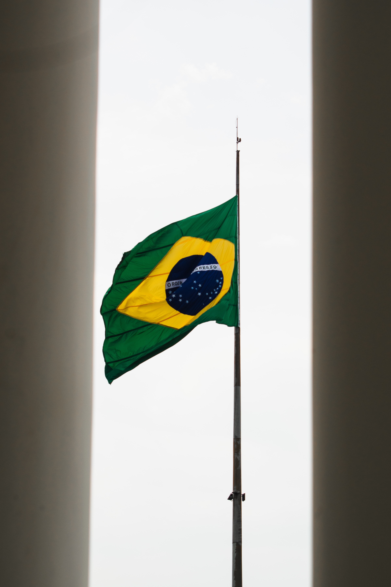

Geografía del Perú
Información actualizada de la geografía del PerúPuntos clave para guiarnos:
Ubicación del Perú y la corriente de Humboldt
Perú se ubica en América del sur, entre la línea ecuatorial y el trópico de capricornio. Además de esta, posee la corriente de Humboldt, la cual produce que el agua de su mar sea fría. Perú posee una extensión de 1,285 millones km² y un mar de 200 millas marinas. Perú se divide principalmente en tres regiones:
La costa peruana
La costa es la franja más cercana al mar. Esta suele tener un clima templado, con 2 estaciones muy marcadas Verano e Invierno. En la costa se pueden ver áreas desérticas tanto como valles fértiles por la desembocadura de los ríos al mar.
La sierra peruana
Después de la costa llega la sierra, la cual es marcada por el comienzo de regiones montañosas. En esta se ubica el trozo de la Cordillera de los Andes en Perú. Esta zona montañosa es rica en metales. En la sierra se diferencia la temporada de Lluvias o Invierno del Verano o temporada seca.
La selva peruana
Por último se encuentra la selva. En esta se encuentra la parte del amazonas que esta en Peru. Esta es muy conocida por su cantidad de vegetación y fauna que posee. Además de esta, es muy conocida por su río principal, el “río Amazonas”. Esta tiene dos temporada muy marcadas, los meses de abundante lluvias (noviembre a marzo) y los meses de poca lluvia (abril a octubre).
Fronteras del Perú
Perú posee frontera con 5 países. Todas estas fronteras están establecidas mediante tratados y poseen aproximadamente 10 153 kilómetros de perímetro.
Frontera con Ecuador
Esta frontera abarca las tres regiones peruanas. Esta se ubica desde río Capones hasta el río Güepí. Esta posee una extensión de 1 528,54 Km.

Frontera con Colombia
La frontera se ubica entre río Güepí hasta la confluencia del río Yavarí con el río Amazonas. Esta posee una extensión de 1 506,06 Km. Su creación se remonta al "Tratado Salomón-Lozano" firmado en 1922.
Frontera con Brasil
La frontera se ubica entre el río Yavarí hasta la boca del río Yaverija. Este se extiende 2,822.49 Kms aproximadamente.
Frontera con Chile
Esta se ubica entre la meseta de Ancomarca hasta el punto denominado Concordia en la orilla de playa en el Océano Pacífico. Esta tiene una extensión de 169 Km.
Frontera con Bolivia
La frontera se ubica entre el río Yaravija hasta la meseta de Ancomarca. Esta posee una extensión de 1 047,16 Km.